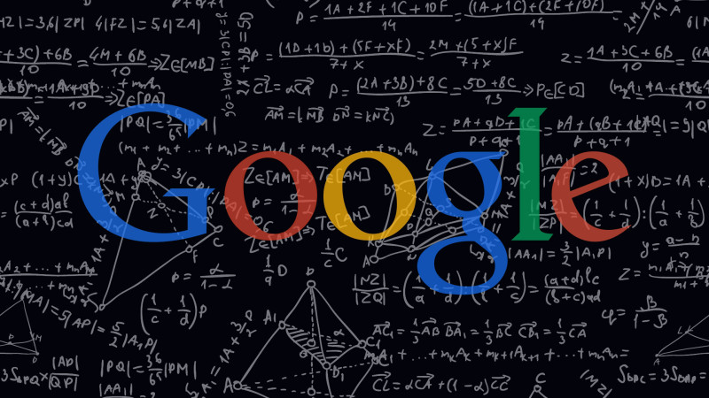

Google Logo: The Google logo appears in numerous settings to identify the search engine company. Google has relied on several logos since its renaming (see History of Google), with the first logo created by Sergey Brin using GIMP. A revised logo debuted on September 1, 2015.
A googel: A googol is the large number 10100. In decimal notation, it is written as the digit 1 followed by one hundred 0s:
100000000000000000000000000000000000000000000000000 00000000000000000000000000000000000000000000000000.Logo: The previous logo, with slight modifications between 1999 and 2013, was designed by Ruth Kedar; the wordmark was based on the Catull typeface, an old style serif typeface designed by Gustav Jaeger for the Berthold Type Foundry in 1982.Google at Dublin: Located in the heart of the historic docklands district (a.k.a. Silicon Docks), Google has helped put Dublin on the map as a technology hub in Europe. Our office is made up of thousands of Googlers from all over the world, overseeing operations for our business in Europe, the Middle East and Africa.What is Google: Google Inc. is an American multinational technology company specializing in Internet-related services and products. These include online advertising technologies, search, cloud computing, and software.Worth: The company google is now worth about $364.99 billion.The logo: A revised logo debuted on September 1, 2015. The previous logo, with slight modifications between 1999 and 2013, was designed by Ruth Kedar; the wordmark was based on the Catull typeface, an old style serif typeface designed by Gustav Jaeger for the Berthold Type Foundry in 1982.About google logo: The Google logo appears in numerous settings to identify the search engine company. Google has relied on several logos since its renaming (see History of Google), with the first logo created by Sergey Brin using GIMP.